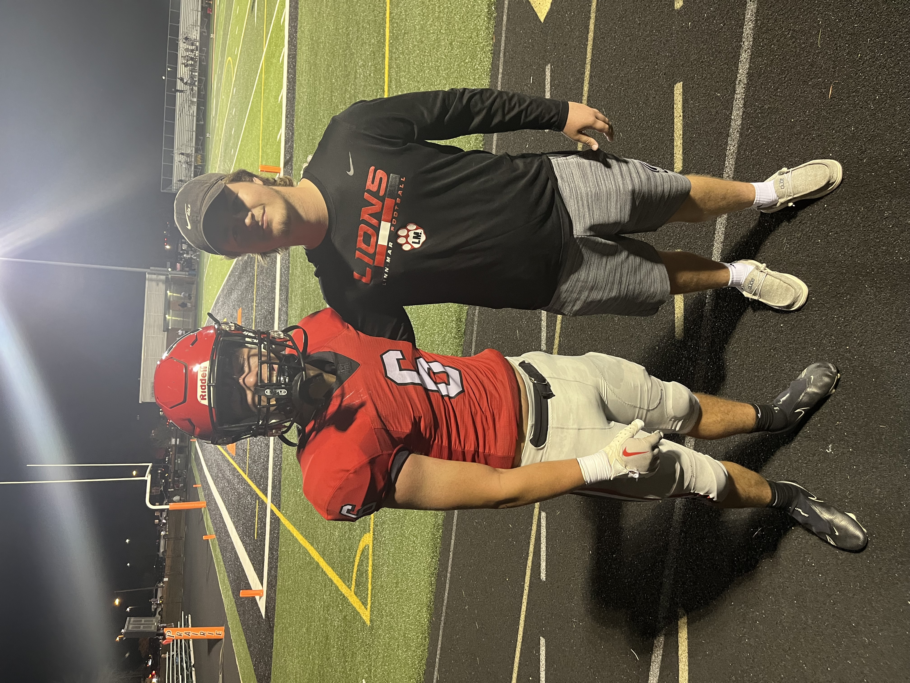
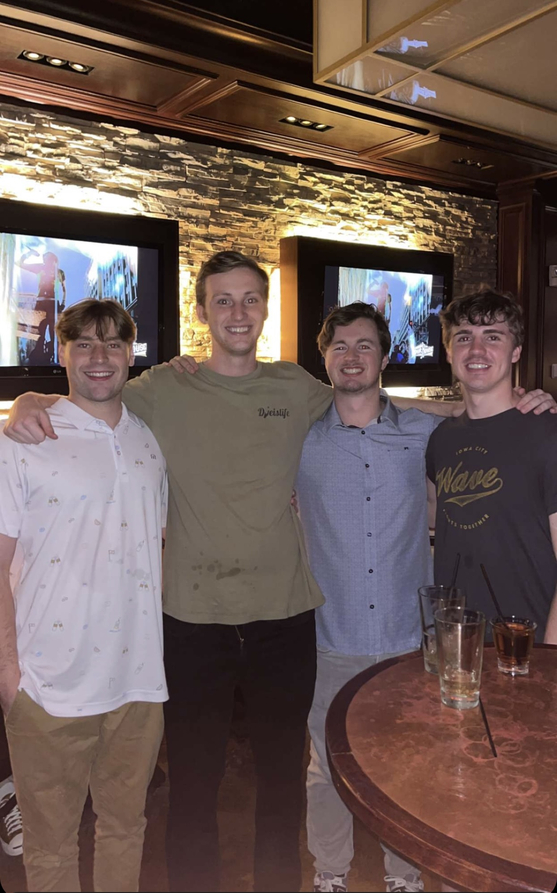

About Me
My name is Sam Starnes and welcome to my web page, I am currently a sneior at th University of Iowa and will obtain a degree in Business Analytics and Information Systems come the end of this spring semester. I will also graduate with a minor in Sport and Recreation Management, which i hope to be able to put to good use in my future.
Some more about me, I am from Cedar Rapids, a short 45-minute drive from the University of Iowa and I will be moving to Chicago this summer where I will start my full time job. I have always wanted to live in Chicago and a big part of this is my Chicago sports fandom, I support all Chicago pro teams apart from the White Sox, which has led to a multitude of dissapointing seasons throughout my lifetime. If you would like to read my thoughts on the teams please click here. Apart from that, I am a loyal Iowa Hawkeye fan and primarily follow the football and wrestling team, as a result this past fall has been frustrating but in the comin years with the Big 10 expanding west, I am very excited to see some schools I have never seen play at Kinnick and hopefully making a couple trips out west to those beautiful stadiums.
I have a younger brother who also attend the University of Iowa, he is a freshman currently and I believe he will be in the Tippie College Business officially this coming fall semester. It has been a cool experience being able to live with him in the same city and expericne college together, alebeit he is starting his journey and I am wrapping mine up. I do not have too many pictures of us together so I apologize for not getting a better picture of him but as we both played football and this game was a big win, it is cool to showcase this picture as I know how important football was to him.
This past summer I lived in Chicago while completing an internship with RSM, and I will be moving back out there this summer. Living there this past summer was a blast of an experience and in the picture below are 4 of the 5 of us that lived together on our last weekend in the city before we all went our seperate ways. Living there opened my eyes as I have always lived in Iowa and Iowa City is far and away the most "urban" environment I have lived in. Compared to the 4-bedroom apartment I lived in just next to Michigan Avenue, it was a culture shock to put it lightly. We are all planning on moving back to Chicago in the next year although we will not all be living together again.
- John is on the left, he is from Minnesota and goes to the University of Kansas.
- Colin is on his right, he is from San Francisco and attends San Diego State.
- I am third from the left, I obviouslly attend the University of Iowa and and from Cedar Rapids.
- Trey is the furthest right, and he also attends Iowa and we have known each other since elementary school.
The four of us were pretty close this summer and I worked with John's roommate at Kansas by sheer coincidence. We all had different backgrounds and jobs and being the only Analytics student of the 5 of us living together opened my eyes to what is expected of people working in analytics as well as where people woth other backgrounds tend to struggle with things I would find not as challenging.